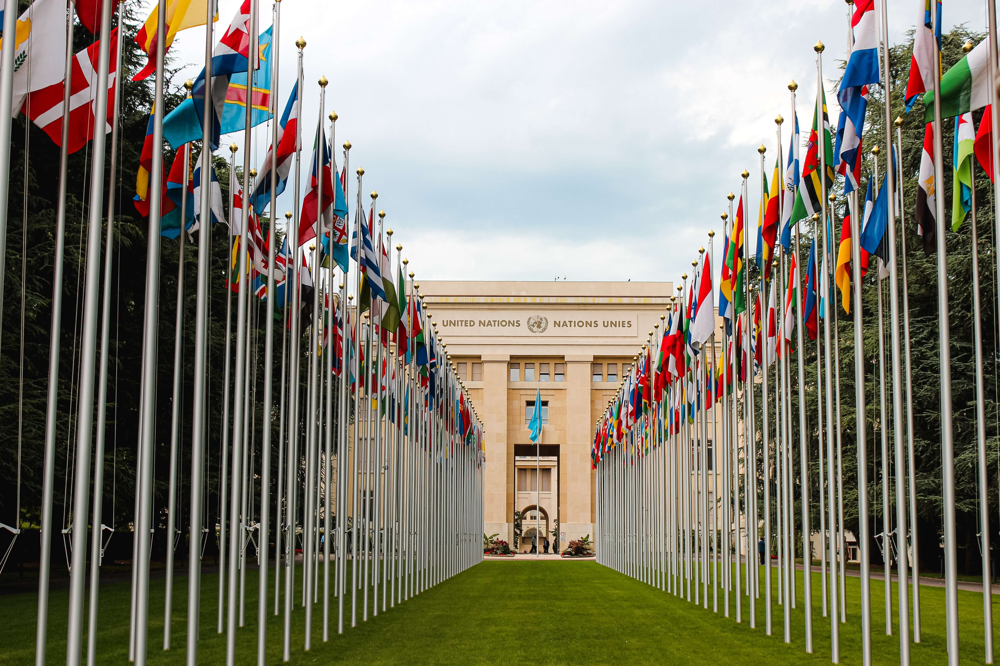
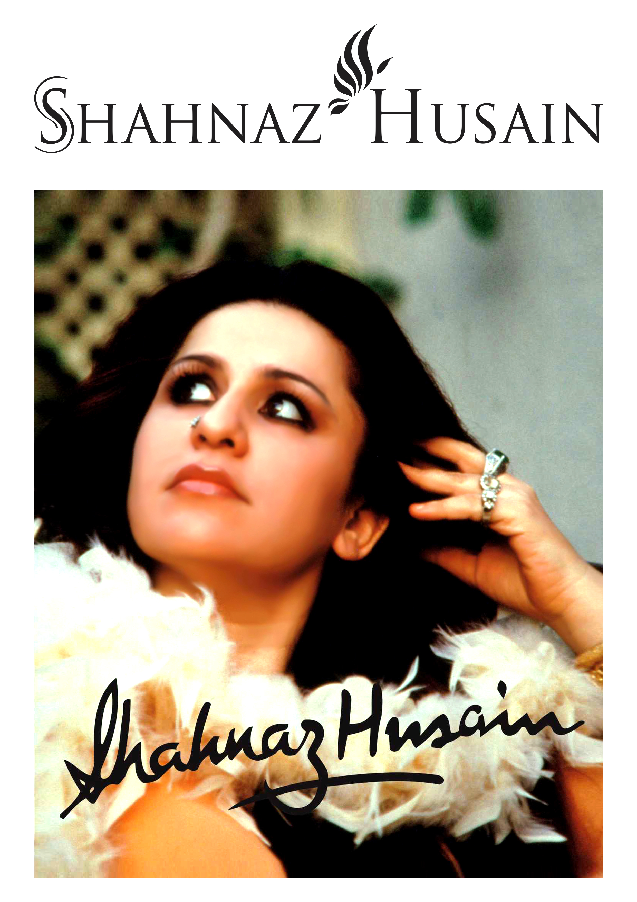
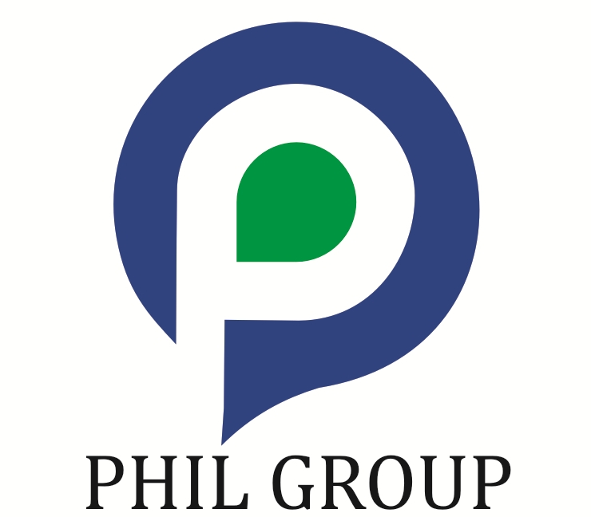
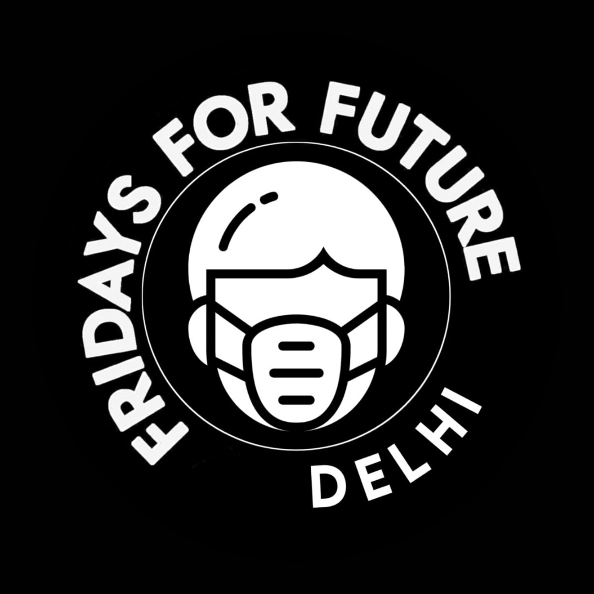
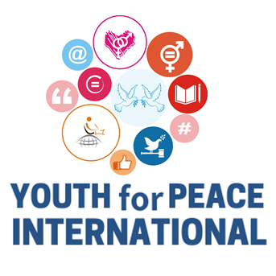
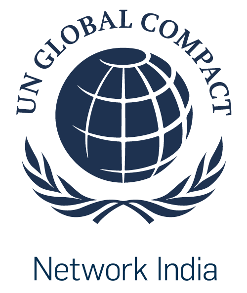
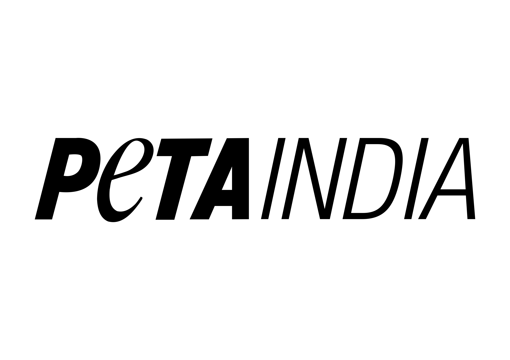
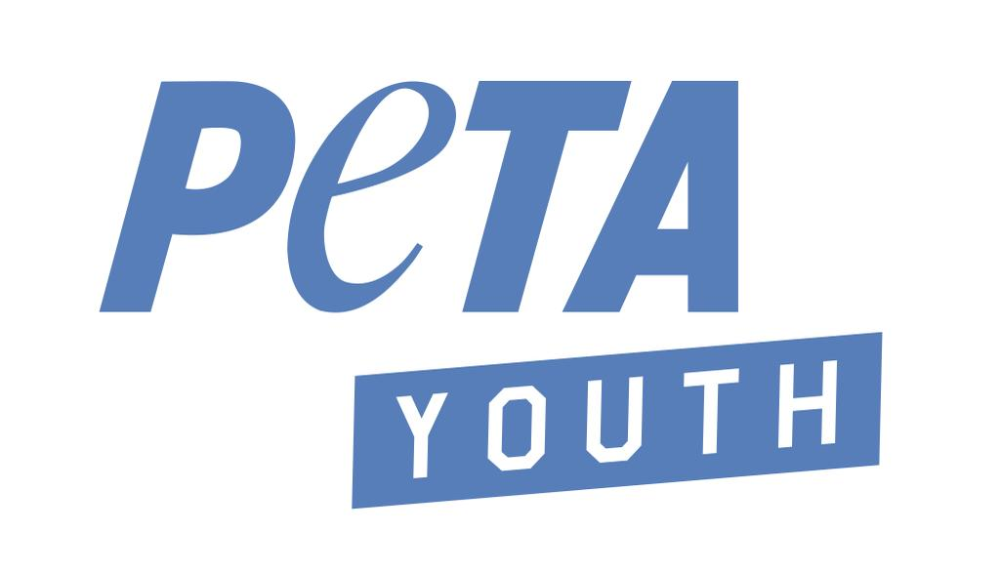

Registration for AMIMUN 2022 has opened. Register now !
Perserverantia Omnia Vincit
January 22nd — January 23rd, 2022
"Perseverance doesn't always mean winning and losing. Perseverance
means showing up and rising to the occasion and performing."
— Michael Chiesa
REGISTER
Message from the Secretary General of The United Nations
Message from Secretary General
Shubhangi Thakur
Secretary General
AMIMUN 2022
Dear Delegate, Human history, especially the past two years, has
been inundated with times of great sorrow and strife. Yet, we
continue to march forward, forever continuing on towards the
horizon. It is with this sentiment of determination, that I invite
you to Amity International Model United Nations 2022 (AMIMUN’22).
The 11th edition of the AMIMUN Conference will be held online from
Saturday, January 22nd to Sunday, January 23rd, 2022.
Each iteration of AMIMUN has expanded upon its legacy with great
success, from managing greater numbers each year, to ensuring global
participation with our international delegates. We, as the
secretariat of AMIMUN’22, are confident in our ability to stay true
to tradition and bring to you an exceptional debating experience.
Despite all that has transpired, we shall not be deterred-
“Perserverantia Omnia Vincit”.
AMIMUN’22 is the optimal platform for students across the world to
display their fervor for debate through constructive discussion,
while simultaneously enabling them to delve further into continuous
changes occurring across the world. During this edition, we believe
the agendas set will push delegates to truly reflect on the issues
today, showing them just how vital it is to persevere above all. We
look forward to seeing delegates flourish through this experience,
and hope to aid in their path towards being diplomatic delegates,
and also holistic young leaders. I would like to take this
opportunity to thank our Founder President Sir, Chancellor Sir,
Vice-Chancellor Ma’am, Faculty Coordinators, Partners, and Sponsors
for their unabating support for AMIMUN'22, and for making this
conference possible. On behalf of the secretariat, I extend a warm
invitation to all delegates and hope this conference will be as
productive for you as an individual, and as a delegate. Remember,
“Perserverantia Omnia Vincit”- perseverance conquers all. I
wish you all the very best.
Sincerely,
Shubhangi Thakur
Secretary General
Amity International Model United Nations 2022
Our Sponsors

×
Shahnaz Husain
The Shahnaz Husain brand is an internationally recognized brand
that has played an essential role in the industry for the past
50 years. It is a well-known brand emphasizing organic beauty
care, combining ancient ayurvedic traditions and procedures with
cutting-edge modern technology. The Shahnaz Husain organic
formulations are based on the "Natural Care and Cure" philosophy
and include herb, flower, fruit extracts, essential oils, and
even rare minerals and gemstones. Over the last four decades,
the Shahnaz brand has established unquestioned brand loyalty.
Today, it is ideally positioned in the domestic and
international market for Ayurvedic beauty care.
The franchise offers an established business model with a proven
success rate apart from solid branding. The Shahnaz Husain Group
has developed over 380 Ayurvedic products for beauty and health
care. Indeed, after emerging as the premium sector's brand
leader, the brand now commands a dominant presence in the medium
segment thanks to the power of its brand identity. Moreover,
modern manufacturing and R&D facilities and extensive experience
have given the Group a competitive advantage in the complex
formulation of products.

×
Phil Coal Beneficiation & Energy Pvt. Ltd.
Phil Coal Beneficiation & Energy Pvt Ltd is a flagship company
of the Phil Group, which has a wide range of interests in coal
washing, trading, handling, logistics, and transportation in
Chhattisgarh, India. The PHIL group has developed a fully
integrated total fuel solution model for power, metal, and
cement plants. It offers all coal services under one roof, from
coal allocation to coal delivery, including coal allotment,
long- term fuel supply agreements, purchase of coal directly
from SECL mines, quality and control, transportation, washing,
logistics, and delivery at the consumer's plant via road and
personal railway siding (PMBG).
PHIL Group has provided transportation by road and rail in all
over India through his Coal Washeries with a capacity of 2.5
MTPA at Ghutku, Bilaspur & capacity of 0.96 MTPA in Raigarh
(C.G.).
Mr Praveen Jha, a Science Graduate with broad experience in top
management level various national companies, good technical
command on coal & Steel and about 20 years of commercial
experience, is one of the company's promoters. Phil Coal is now
one of the leading coal companies in the mineral-rich state of
Chhattisgarh. With a combined sales of Rs 221 crore for 2020,
the company expects to reach a revenue of Rs 300 crore in the
fiscal year 2021.
×
Sagar Pictures
Sagar Pictures is a well-known film and television production
business. Sagar Pictures is a significant content producer for
Indian television, feature films, and documentaries. Dr.
Ramanand Sagar's world-famous Indian TV series based on the
Ramayan introduced television to Indian households in 1987, and
the company remains inspired by its legendary heritage but is
propelled by a fresh contemporary vision, trendsetting Indian
audio-visual content and production.
With Ramayana, the longest-running television epic, Sagar
Pictures managed to create one of the biggest television
sensations of the era. The broadcast, which was re-aired after
33 years during the initial wave of the pandemic's lockdown,
smashed all global records by becoming the most-watched
entertainment programme on the planet. For the past 71 years,
the production firm has been a cornerstone of Indian film,
becoming a pioneer in the art of script and motion pictures.
Other well-known Sagar picture series include Luv Kush, Shri
Krishna, Aladdin, Meera, and many more. The company, which is
widely recognised for bringing television into Indian
households, is still propelled by its ancient origins and a
modern vision and has managed to become a trendsetter in Indian
audio-visual entertainment.
Our Collaborations

×
United Nations Educational, Scientific and Cultural Organization (UNESCO)
The United Nations Educational, Scientific, and Cultural Organization strives to promote progress and foster collaboration by fostering international cooperation in Education, Science, and Culture. UNESCO's programmes help to accomplish the Sustainable Development Goals outlined in Agenda 2030, which was adopted by the United Nations General Assembly in 2015. Governments' political and economic frameworks are insufficient to assure the peoples' long-term and sincere support. Dialogue and mutual understanding must be the foundations of peace. In this spirit, UNESCO creates educational resources to assist people in living as global citizens who are free of hatred and intolerance. UNESCO strives to ensure that every child and citizen has access to a high-quality education. UNESCO strengthens national relationships by fostering cultural heritage and the equal dignity of all cultures. UNESCO promotes scientific programmes and policies as development and cooperation platforms. UNESCO advocates for free expression as a fundamental right and a prerequisite for democracy and development. The founding idea of UNESCO arose in response to a world war marred by racist and anti-Semitic violence. Seventy years and several liberation fights later, UNESCO's mandate is more relevant than ever. The purpose of UNESCO remains to reinforce the humanist purposes of education, research, and culture.

×
Fridays for future Delhi
Fridays For Future is a global people's climate justice campaign. Fridays for Future believes in peaceful, non-violent ways to let our national and state governments know of our demand to address the ongoing climate crisis and ecological breakdown in a world burdened by climate changes caused by unsustainable practises adopted by individuals and industries affecting all citizens. FF prioritises ecological contributions and resolutions in decision-making and advocates the same at the national level. It argues that, in the grand scheme of things, systemic reform will cause greater individual changes. They mostly use strategies such as climate strikes or marches, and Fridays for Future (FFF) India has carried out a number of activities in the last year across its 61 local chapters around the country. Notable recent calls to action include the "Save Aarey" campaign and the statewide movement calling for the withdrawal of the EIA Draft 2020. Through research, information, education, webinars, speeches, and events, FFF India raises awareness of the climate issue and the need for climate justice. Campaigns are intended to raise awareness of significant changes that pose a threat to the environment, with the goal of educating people sufficiently to demand climate action.

×
Youth for Peace International
Youth for Peace International is a youth-led peacebuilding
organization where it envisions a peaceful world of empowered
individuals and sustainable societies. Since its foundation in
2015, it has been working at community, national and
international levels with children and teachers through: Peace
Education consisting of training and workshops, Rohingya
Refugees Rehabilitation support, activism via creative online
campaigns and Policy Advocacy for Youth Peacebuilding in India.
It aims at developing personal-professional competencies of
Youth through experiential learning methodology thereby
incubating a project created and executed by them through a
designing-thinking approach of problem-solving.
Values such as nonviolence and empathy are lacking in the
educational diaspora. Conflicts, both personal and
interpersonal, stay unsolved as a result, leading to their
escalation and, at times, violence. As an individual grows up in
such an environment, he or she loses the ability to perceive and
appreciate diversity. Such an environment makes harmonious
coexistence difficult. YPI is committed to offering innovative
and long-term solutions to such 'Glo-cal' issues, as well as
safe spaces for the spread of a culture of openness and
discussion.

×
UN Global Compact Network India
As the UN Global Compact Network's local arm, UNGCN India has
been acting at a national level in providing a robust platform
for Indian businesses, academic institutions, and civil
organizations to better collaborate, to better enforce
responsible business practices. UNGCNI encourages businesses and
firms to adopt sustainable and socially responsible policies,
while simultaneously encouraging reporting on their
implementation, to implement actual ground level change. It
provides a space that allows issues regarding human rights,
labour, and corruption to be brought to light, so designing
resolutions becomes a little more straightforward. UNGCN India
works on 10 principles, which call upon businesses to: support
and respect the protection of internationally proclaimed human
rights, ensuring they are not complicit in human rights abuses.
Other such principles include upholding the freedom of
association and the effective recognition of the right to
collective bargaining and to pursue the elimination of
discrimination in respect of employment and occupation; support
a precautionary approach to environmental challenges and to
undertake initiatives to promote greater environmental
responsibility; and work against corruption in all its forms,
including extortion and bribery.

×
PETA India
PETA youth is PETA India's outreach programme for teenagers and
young adults. It was created to empower, inspire, and assist the
youth, who have the potential to make a significant difference
for animals. PETA Youth places young people at the forefront of
today's animal rights movement, from assisting them in enacting
animal-friendly reforms in their schools, colleges, and
communities to assisting them in leading the fight against cruel
industries that harm animals.
PETA Youth approaches the fight against animal cruelty in a
unique way, having a convivial and mirthful time while spreading
the word about animal rights through rallies, flash mobs, and
graffiti. They also make cruelty-free living simple by providing
information on everything from vegan foods to 'how to avoid
buying products that harm animals.' To top it all off, they
collaborate with some of the most well-known college festivals
in the country, including Sunburn, the Escape Festival of Art
and Music, NH7 Weekender, and Strawberry Fields Forever Music
Festival.

×
PETA Youth
PETA youth is PETA India's outreach programme for teenagers and
young adults. It was created to empower, inspire, and assist the
youth, who have the potential to make a significant difference
for animals. PETA Youth places young people at the forefront of
today's animal rights movement, from assisting them in enacting
animal-friendly reforms in their schools, colleges, and
communities to assisting them in leading the fight against cruel
industries that harm animals.
PETA Youth approaches the fight against animal cruelty in a
unique way, having a convivial and mirthful time while spreading
the word about animal rights through rallies, flash mobs, and
graffiti. They also make cruelty-free living simple by providing
information on everything from vegan foods to 'how to avoid
buying products that harm animals.' To top it all off, they
collaborate with some of the most well-known college festivals
in the country, including Sunburn, the Escape Festival of Art
and Music, NH7 Weekender, and Strawberry Fields Forever Music
Festival.
Our Partners

×
Amar Ujala (National Media Partner)
Founded in 1948, Amar Ujala is one of India’s leading Hindi
Newspaper with 21 editions in 180 districts in 6 states and 2
union territories. They have a total readership of over 4 crore
readers and over 20 lakh copies circulated daily across North
India, covering Uttarakhand, Himachal Pradesh, Jammu and
Kashmir, Haryana, Chandigarh, Punjab, Delhi NCR and Uttar
Pradesh,making it one of the most widely read broadsheet
newspapers in India. Amar Ujala offers various specialist
supplements concentrating on issues such as jobs and careers,
entertainment, and many more in addition to the mainline
newspaper and city-centric pull outs.
Amarujala.com is also leading in the Hindi Digital space,
received WAN-IFRA award for its design, innovation & audience
fitment, gets over 50M unique visitors every month. It is the
fastest growing Hindi news website in India, and focuses on
National and International News, Business, Sports, Technology,
Entertainment and Lifestyle.
They have a prominent presence on social media with over 927K
followers on Instagram, 8.1M followers on Facebook, 1.8M
followers on Twitter and over 1.68M subscribers on YouTube.